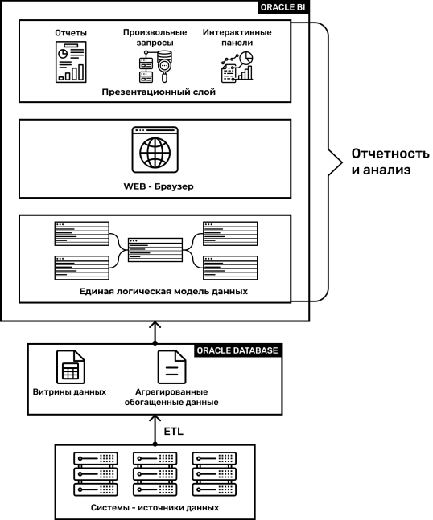

- В базовой версии ФАЗИС на основе логической модели данных поставляется набор аналитических отчетов, размещенных на интерактивных информационных панелях, перечень которых может быть расширен, а структура видоизменена в соответствии с требованиями заказчика:
- Управленческая отчетность: Баланс и P&L
- Портфели: Отчеты по портфелям
- Анализ платежей: Платежи и денежные переводы
- Анализ доходов и расходов: Доходы и расходы, Расходы, Расходы АХР
- Отчетность казначейства: Исходящие платежи по счетам НОСТРО, Обороты по счетам ЛОРО/НОСТРО, Операции (остатки) по счетам ЛОРО/НОСТРО, Отчет по ЛОРО респондентам, Отчеты по остаткам по счетам и сделкам, Сводный отчет по доходно-расходным операциям клиента
Основные функциональные возможности:
-
1Формирование отчетов и аналитических выборок на произвольную дату
-
2Построение произвольных аналитических запросов в бизнес-терминах (филиал, клиент, счет, продукт, остаток и т.д.)
-
3Анализ экономических показателей на произвольных уровнях агрегирования в различных аналитических разрезах (филиал, валюта, клиент, продукт, параметры клиента и т.д.) с возможным учетом сроков, оставшихся до погашения (с произвольными границами временных периодов)
-
4Детализация и навигация с любого уровня агрегирования в связанные по продукту, портфелю, валюте, балансовому счету и другим атрибутам наборы отчетных данных для оперативного контроля корректности расчета
-
5Расчет экономических показателей по разнородным данным, хранящимся в различных источниках
-
6Просмотр аналитических отчетов через Internet-браузер
-
7Размещение разнородной аналитической информации (таблицы, диаграммы, спидометры, форматированный текст) на одной информационной панели
-
8Выгрузка любых результатов аналитических расчетов в MS Excel, Adobe Acrobat (PDF), Power Point, HTML
-
9Работа с информационными панелями с помощью мобильных устройств (iPad / iPhone).
Функционально–технологическая архитектура и компоненты

Внедрение ФАЗИС обеспечит:
-
1Использование унифицированной терминологии в рамках единой логической модели данных
-
2Возможность построения произвольных аналитических запросов и отчетов на произвольную отчетную дату
-
3Интеграцию отчетности банка в рамках единой отчетно-аналитической платформы Oracle BI
-
4Реализацию механизмов формирования и оперативного контроля управленческой и аналитической отчетности банка
-
5Сокращение времени формирования отчетности и повышение ее качества.